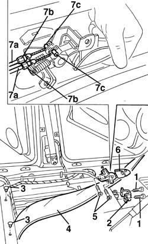

7025B30 boot lid open control - r+r
- Path
- Procedures > 70 FITTINGS > 7025 COMPARTMENT LIDS > 7025B boot lid > 7025B30 boot lid open control - r+r
- Kind
- repair procedure (removal / refitting; the operation number is the code)
- Applies to
- all engines; all production periods
- Interactive page
- https://sloeber94.github.io/elrnDB-a156/en/#/3238737
Applies to: all engines; all production periods
 Removing
Removing
 Refitting
Refitting7040L40 front compartment scuff strip - r r (left side).
- 7040L44 rear compartment scuff strip - r r (left side).
7040H36 central trim lower element - r r (left side).
7050A20 one-piece rear seat cushion - r r
7045A10 l/h or r/h front seat (one) - r+r (left side).
5010C44 air diffuser to rear seat - r+r
1. Unscrew the inertial switch protection screws.
2. Remove the inertial switch protection.
3. Unbutton the two buttons of the floor carpet.
4. Lift the floor carpet along the left side of the car.
5. Unscrew the open control.
6. Remove the open control from the carpet.
7. Release the sheath (7a) from the stops (7b) and the cable ends (7c) from their attachments.
Take the open control.

Applies to: all engines; all production periods
Refitting
RemovingCheck that the open control is not damaged.
Connect the control cables to their attachment and the sheaths to the stops.
Insert the open control in the carpet hole and position it in its seat.
Tighten the fastening screws of the open control.
Position the floor carpet in its seat along the left side of the car.
Button the two buttons of the floor carpet.
Reassemble the inertial switch protection with its screws.
5010C44 air diffuser to rear seat - r+r
7045A10 l/h or r/h front seat (one) - r+r (left side).
7050A20 one-piece rear seat cushion - r r
7040H36 central trim lower element - r r (left side).
- 7040L44 rear compartment scuff strip - r r (left side).
7040L40 front compartment scuff strip - r r (left side).
Check the function of the open control.
Topics linked from this page (5)
- 5010C44 air diffuser to rear seat - r+r
- 7040H36 central trim lower element - r r
- 7040L40 front compartment scuff strip - r r
- 7045A10 l/h or r/h front seat (one) - r+r
- 7050A20 one-piece rear seat cushion - r r